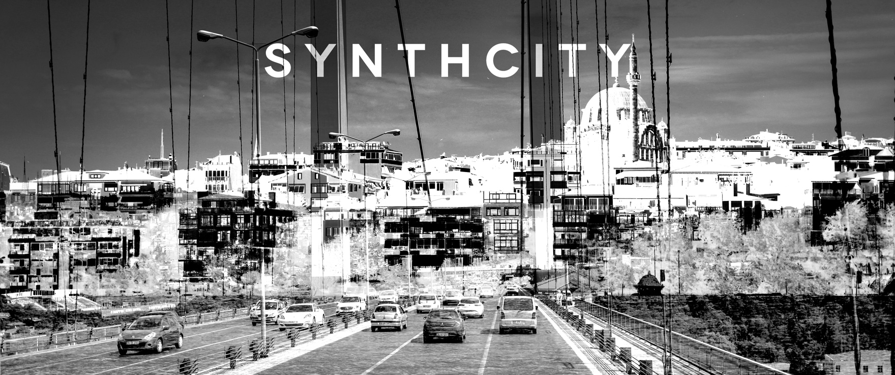

I am an Assistant Professor of Performing Arts Technology at the
Univesity of Michigan. As a multimedia artist, I work with a range of media including virtual reality and modular synthesizers. I am interested in multimodal worldmaking, and how we
interact with virtual environments. I was a Postdoctoral Research
Associate at the University of Illinois at Chicago's Electronic Visualization
Laboratory. Before that, I was a faculty member at the Istanbul Technical University, Center
for Advanced Studies in Music, where I founded the Sonic Arts Program. I
conducted my PhD research at Leiden University's Academy of Creative and
Performing Arts, in affiliation with the Industrial Design Department at Delft
University of Technology and the Institute of Sonology in The Hague. I studied Multimedia
Design at the University of California, Santa Barbara's Media Arts and
Technology Department.
SYNTHCITY
Synthcity is an upcoming generative audiovisual
installation.
By computationally blending everyday figures and textures, it
synthesizes extremely unrealistic versions of a city using its real
landscapes, objects, sounds and people. Synthcity will be premiered at ISEA
2017 in Manzales, Colombia.

TEMAS
Temas is a stochastic audiovisual
performance.
The software underlying Temas integrates the artist into a
generative system as a module of analysis.